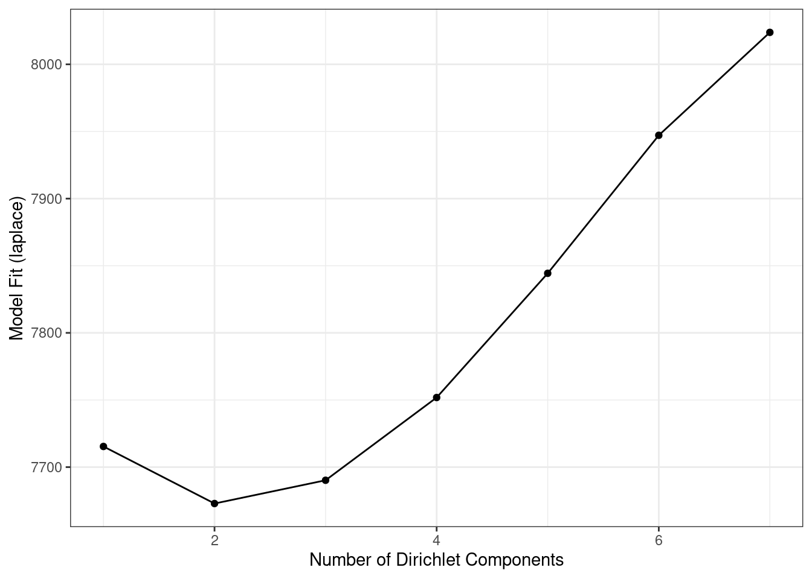
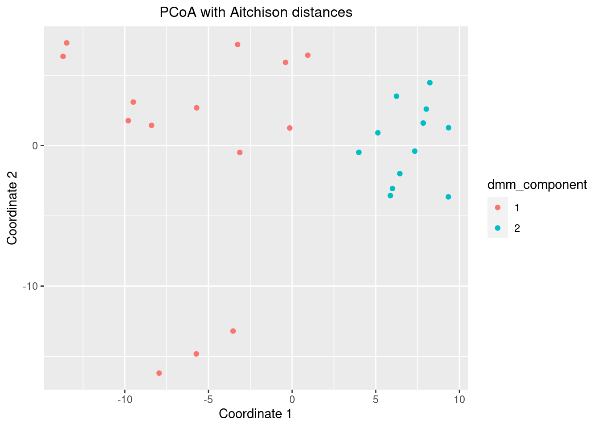
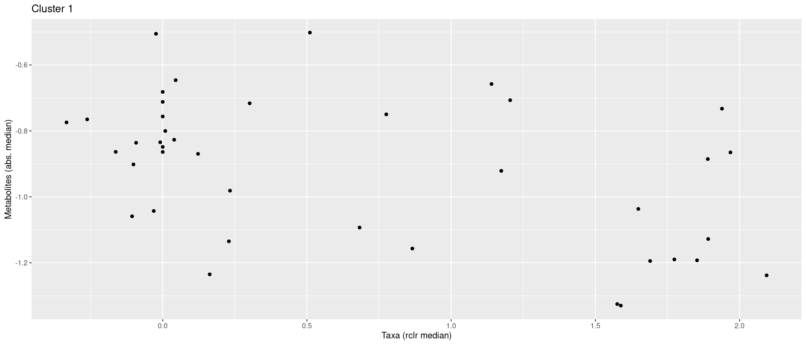
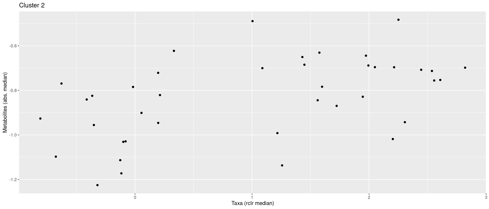
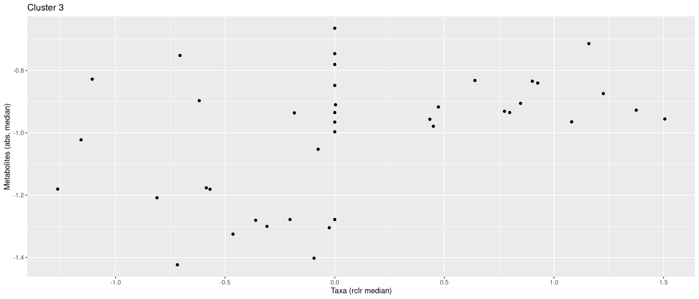
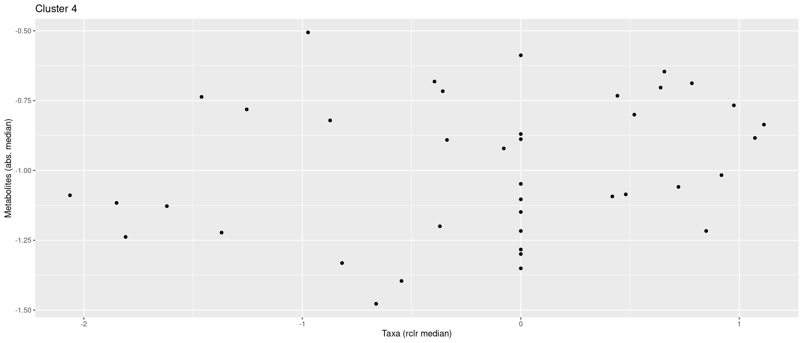
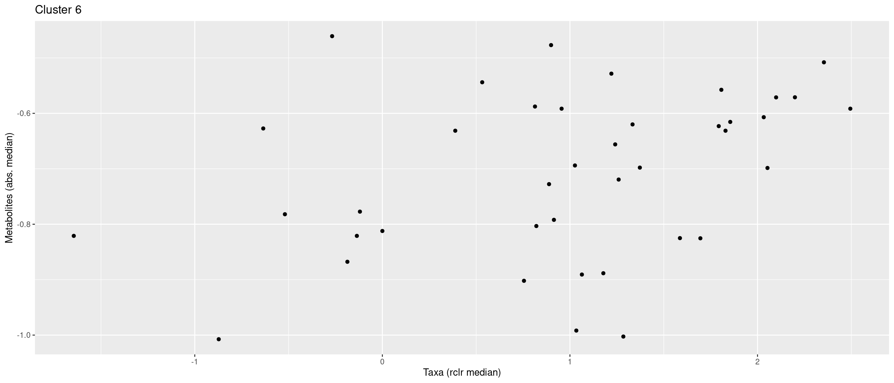
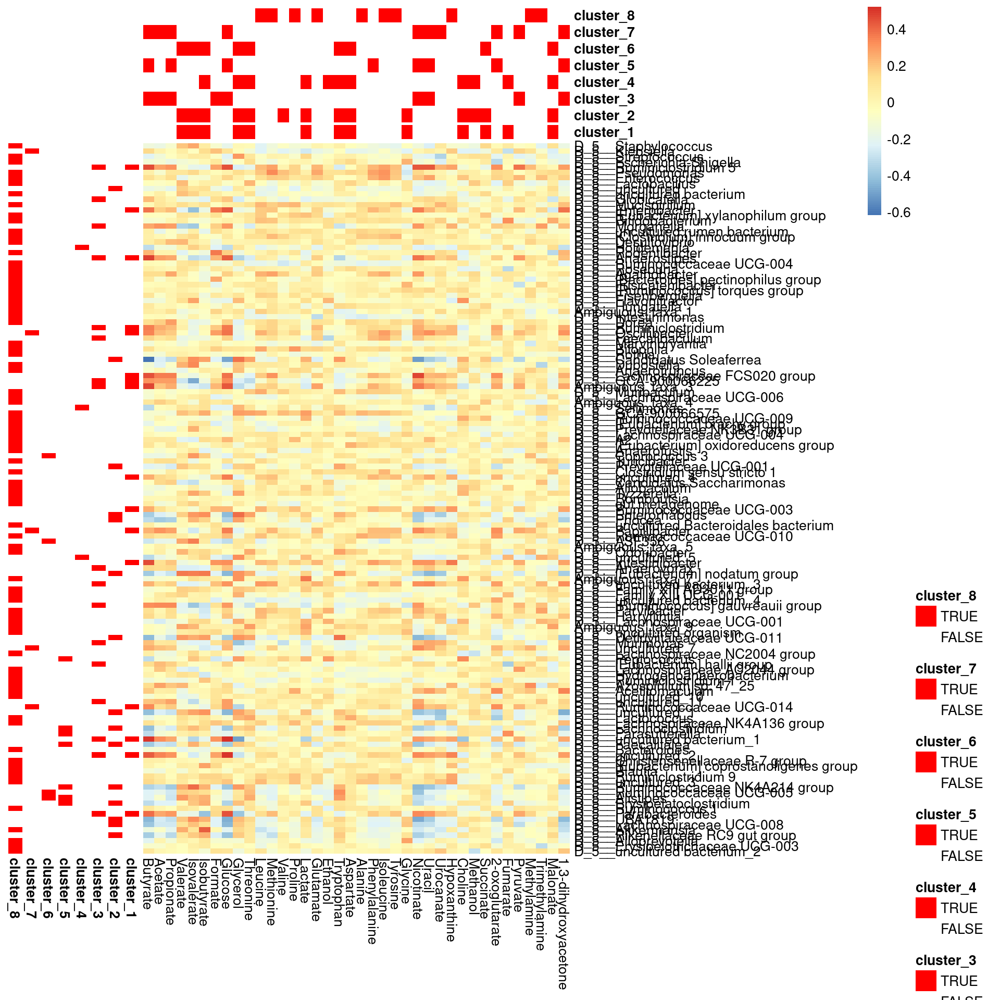

library(mia)
data("enterotype", package = "mia")
tse <- enterotype11 Community Typing (Clustering)
Clustering is an unsupervised machine learning technique. The idea of it is to find clusters in the data. A cluster is a group of features/samples that share a pattern. For example, with clustering, we can find group of samples that share similar community composition. There are multiple clustering algorithms available.
As mentioned before, clustering can be done either features or samples. We will focus on the latter here. To learn about feature clustering, check out chapter 6.3.
11.1 Custom tools
bluster is a Bioconductor package providing tools for clustering data in in the SummarizedExperiment container. It offers multiple algorithms such as hierarchical clustering, DBSCAN, K-means, amongst others. The first thing to do when using this package is to load it, and transform the data if necessary, depending on your analysis goals.
# Load dependencies
library(bluster)
library(kableExtra)
# Apply transformation
tse <- transformAssay(tse, method = "relabundance")The main focus here will be how to use mia’s cluster function to cluster. It has multiple parameters that allow you to shape the result. * The main new parameter allows you to choose the algorithm you want to use. In this example, we will use HclustParam which does the hierarchical clustering. This parameter itself has parameters on its own, you can check them in the HclustParam documentation. * Another parameter is MARGIN, which allows us to choose whether we want to cluster the features or samples . Here we will cluster the latter. * We will see the other parameters as we go along.
# Simple use of the hierarchical clustering. Here, the default parameters
# set the cut height to half of the dendrogram height.
tse <- cluster(tse, assay.type = "relabundance",
MARGIN = "samples", HclustParam())
# Check the result contained in the clusters part of colData
head(colData(tse)$clusters) AM.AD.1 AM.AD.2 AM.F10.T1 AM.F10.T2 DA.AD.1 DA.AD.1T
1 1 1 1 1 1
Levels: 1 2 3 4 5 6 7 8 9Once the clustering on the samples is done, we can also plot the clusters.
library(scater)
# Add the MDS dimensions for plotting
tse <- runMDS(tse, assay.type = "relabundance",
FUN = vegan::vegdist, method = "bray")
# Plot the clusters
plotReducedDim(tse, "MDS", colour_by = "clusters")We will now see different common algorithms and how to use them.
11.2 Hierarchical clustering
The hierarchical clustering algorithm aims to find hierarchy between samples/features. There are to approaches: agglomerative (“bottom-up”) and divisive (“top-down”).
In agglomerative approach, each observation is first in a unique cluster. The algorithm continues by agglomerating similar clusters. The divisive approach starts with one cluster that contains all the observations. Clusters are split recursively to clusters that differ the most. The clustering ends when each cluster contains only one observation. In this algorithm, the similarity of two clusters is based on the distance between them.
Hierarchical clustering can be visualized with a dendrogram tree. In each splitting point, the tree is divided into two clusters leading to the hierarchy.
library(vegan)
# Load experimental data
tse <- enterotypeHierarchical clustering requires 2 steps. 1. Computation of the dissimilarities with a given distance.
2. Clustering based on dissimilarities.
Additionally, since sequencing data is compositional, we’ll apply relative transformation (as seen in the previous example).
library(bluster)
# Apply transformation
tse <- transformAssay(tse, method = "relabundance")
# Do the clustering
tse <- cluster(tse,
assay.type = "relabundance",
MARGIN = "samples",
HclustParam(method = "complete",
dist.fun = vegdist,
metric = "bray"),
full = TRUE,
clust.col = "Hclust")In this example, we wanted additional information on the clustering. To do so, we used the full parameter. We also computed the dissimilarities with the bray distance. Finally, the clust.col parameter allows us to choose the name of the column in the colData (default name is clusters).
Next, we will plot the dendrogram, which is possible since we got the additional information from the clustering.
library(dendextend)
# Get hclust data from metadata
hclust_data <- metadata(tse)$clusters$hclust
# Get the dendrogram object
dendro <- as.dendrogram(hclust_data)
# Plot dendrogram
dendro %>% set("labels", NULL) %>% plot()In our case, we cut the dendrogram in half by default. To know how many clusters we have, we can check the colData.
# Get the clusters
head(colData(tse)$Hclust) AM.AD.1 AM.AD.2 AM.F10.T1 AM.F10.T2 DA.AD.1 DA.AD.1T
1 1 2 1 3 3
26 Levels: 1 2 3 4 5 6 7 8 9 10 11 12 13 14 15 16 17 18 19 20 21 22 23 ... 26We can see that there are 26 clusters, but that probably isn’t optimal since the the number of clusters was chosen arbitrarily. To determine the number of clusters, we can use the dendrogram. Usually the tree is split where the branch length is the largest. However, as we can see from the dendrogram, clusters are not clear. There are algorithms to identify the optimal number of clusters.
The NbClust library is useful to that end as it offers multiple methods to determine the optimal number of clusters. Here we will use the silhouette analysis to determine the optimal number of clusters. For each data point, this analysis measures the distance to other data points in the same cluster (cohesion), and the distance to the other clusters (separation), establishing a score. That score is then combined across the data points. NbClust does this for multiple number of clusters and the best score corresponds to the optimal number of clusters.
library(NbClust)
diss <- metadata(tse)$clusters$dist
# Apply the silhouette analysis on the distance matrix
res <- NbClust(diss = diss, distance = NULL, method = "ward.D2",
index = "silhouette")
Only frey, mcclain, cindex, sihouette and dunn can be computed. To compute the other indices, data matrix is needed res$Best.ncNumber_clusters Value_Index
2.0000 0.4783 Based on the result, let’s divide observations into 2 clusters.
library(dendextend)
# Get optimal number of clusters
k <- res$Best.nc[1]
# Making colors for 2 clusters
col_val_map <- randomcoloR::distinctColorPalette(k) %>%
as.list() %>%
setNames(paste0("clust_", seq(k)))
dend <- color_branches(dendro, k = k, col = unlist(col_val_map))
labels(dend) <- NULL
plot(dend)11.3 Dirichlet Multinomial Mixtures (DMM)
This section focus on DMM analysis.
One technique that allows to search for groups of samples that are similar to each other is the Dirichlet-Multinomial Mixture Model . In DMM, we first determine the number of clusters (k) that best fit the data (model evidence) using Laplace approximation. After fitting the model with k clusters, we obtain for each sample k probabilities that reflect the probability that a sample belongs to the given cluster.
Let’s cluster the data with DMM clustering. Since the dataset is large, the algorithm will take long computational time. Therefore, we use only a subset of the data; agglomerated by Phylum as a rank.
# Get the data
data("GlobalPatterns", package = "mia")
tse <- GlobalPatterns
# Agglomerate by rank
tse <- mergeFeaturesByRank(tse, rank = "Phylum", agglomerateTree = TRUE)Here we will further our use of cluster by renaming the clusters column in the metadata thanks to the name parameter.
# Run the model and calculates the most likely number of clusters from 1 to 7
tse_dmm <- cluster(tse, name = "DMM", DmmParam(k = 1:7, type = "laplace"),
MARGIN = "samples", full = TRUE)# The dmm info is stored in the metadata under the 'DMM' column
tse_dmmclass: TreeSummarizedExperiment
dim: 67 26
metadata(2): agglomerated_by_rank DMM
assays(1): counts
rownames(67): Phylum:Crenarchaeota Phylum:Euryarchaeota ...
Phylum:Synergistetes Phylum:SR1
rowData names(7): Kingdom Phylum ... Genus Species
colnames(26): CL3 CC1 ... Even2 Even3
colData names(8): X.SampleID Primer ... Description clusters
reducedDimNames(0):
mainExpName: NULL
altExpNames(0):
rowLinks: a LinkDataFrame (67 rows)
rowTree: 1 phylo tree(s) (66 leaves)
colLinks: NULL
colTree: NULLThe following operation returns a list of DMM objects for closer investigation.
head(metadata(tse_dmm)$DMM$dmm,3)[[1]]
class: DMN
k: 1
samples x taxa: 26 x 67
Laplace: 7715 BIC: 7802 AIC: 7760
[[2]]
class: DMN
k: 2
samples x taxa: 26 x 67
Laplace: 7673 BIC: 7927 AIC: 7842
[[3]]
class: DMN
k: 3
samples x taxa: 26 x 67
Laplace: 7727 BIC: 8122 AIC: 7995 We can see the Laplace approximation (model evidence) for each model of the k models.
BiocManager::install("microbiome/miaViz")
── R CMD build ─────────────────────────────────────────────────────────────────
* checking for file ‘/tmp/RtmpI1FlJj/remotes104941897fd59/microbiome-miaViz-cb3609c/DESCRIPTION’ ... OK
* preparing ‘miaViz’:
* checking DESCRIPTION meta-information ... OK
* checking for LF line-endings in source and make files and shell scripts
* checking for empty or unneeded directories
* looking to see if a ‘data/datalist’ file should be added
* building ‘miaViz_1.9.5.tar.gz’library(miaViz)
plotDMNFit(tse_dmm, type = "laplace", name = "DMM")
On the graph, we can see that the best number of clusters is 2. We can confirm that with the following operation.
# Get the model that has the best fit
bestFit <- metadata(tse_dmm)$DMM$dmm[[metadata(tse_dmm)$DMM$best]]
bestFitclass: DMN
k: 2
samples x taxa: 26 x 67
Laplace: 7673 BIC: 7927 AIC: 7842 11.3.1 PCoA for ASV-level data with Bray-Curtis; with DMM clusters shown with colors
Group samples and return DMNGroup object that contains a summary. Patient status is used for grouping.
dmm_group <- calculateDMNgroup(tse_dmm, variable = "SampleType",
assay.type = "counts", k = 2,
seed = .Machine$integer.max)
dmm_groupclass: DMNGroup
summary:
k samples taxa NLE LogDet Laplace BIC AIC
Feces 2 4 67 1078.3 -106.26 901.1 1171.9 1213
Freshwater 2 2 67 889.6 -97.20 716.9 936.4 1025
Freshwater (creek) 2 3 67 1600.3 862.19 1907.3 1674.5 1735
Mock 2 3 67 1008.4 -55.40 856.6 1082.5 1143
Ocean 2 3 67 1096.7 -56.66 944.3 1170.9 1232
Sediment (estuary) 2 3 67 1195.5 18.63 1080.8 1269.7 1331
Skin 2 3 67 992.6 -85.05 826.1 1066.8 1128
Soil 2 3 67 1380.3 11.20 1261.8 1454.5 1515
Tongue 2 2 67 783.0 -107.79 605.0 829.8 918Mixture weights (rough measure of the cluster size).
DirichletMultinomial::mixturewt(bestFit) pi theta
1 0.5385 20.58
2 0.4615 15.32It’s also possible to get the samples-cluster assignment probabilities: how probable it is that each sample belongs to each cluster
prob <- metadata(tse_dmm)$DMM$prob
head(prob) 1 2
CL3 1.000e+00 4.519e-17
CC1 1.000e+00 3.438e-22
SV1 1.000e+00 1.716e-12
M31Fcsw 7.440e-26 1.000e+00
M11Fcsw 1.093e-16 1.000e+00
M31Plmr 1.154e-13 1.000e+00We can also know the contribution of each taxa to each component
head(DirichletMultinomial::fitted(bestFit)) [,1] [,2]
Phylum:Crenarchaeota 0.30381 0.1354037
Phylum:Euryarchaeota 0.23114 0.1468863
Phylum:Actinobacteria 1.21370 1.0581457
Phylum:Spirochaetes 0.21393 0.1318056
Phylum:MVP-15 0.02982 0.0007674
Phylum:Proteobacteria 6.84458 1.8114092Finally, to be able to visualize our data and clusters, we start by computing the euclidean PCoA and storing it as a data frame.
# Do clr transformation. Pseudocount is added, because data contains zeros.
assay(tse, "pseudo") <- assay(tse, "counts") + 1
tse <- transformAssay(tse, assay.type = "pseudo", method = "relabundance")
tse <- transformAssay(tse, "relabundance", method = "clr")
# Do principal coordinate analysis
df <- calculateMDS(tse, assay.type = "clr", method = "euclidean")
# Create a data frame from principal coordinates
euclidean_pcoa_df <- data.frame(pcoa1 = df[, 1], pcoa2 = df[, 2])# Create a data frame that contains principal coordinates and DMM information
euclidean_dmm_pcoa_df <- cbind(euclidean_pcoa_df,
dmm_component = colData(tse_dmm)$clusters)
# Create a plot
euclidean_dmm_plot <- ggplot(data = euclidean_dmm_pcoa_df,
aes(x = pcoa1, y = pcoa2, color = dmm_component)) +
geom_point() +
labs(x = "Coordinate 1",y = "Coordinate 2",
title = "PCoA with Aitchison distances") +
theme(plot.title = element_text(size = 12, # makes titles smaller
hjust = 0.5))
euclidean_dmm_plot
11.4 Biclustering
Biclustering methods cluster rows and columns simultaneously in order to find subsets of correlated features/samples.
Here, we use following packages:
cobiclust is especially developed for microbiome data whereas biclust is more general method. In this section, we show two different cases and example solutions to apply biclustering to them.
- Taxa vs samples
- Taxa vs biomolecule/biomarker
Biclusters can be visualized using heatmap or boxplot, for instance. For checking purposes, also scatter plot might be valid choice.
Check more ideas for heatmaps from chapters @ref(viz-chapter) and @ref(microbiome-community).
11.4.1 Taxa vs samples
When you have microbial abundance matrices, we suggest to use cobiclust which is designed for microbial data.
Load example data
library(cobiclust)
data("HintikkaXOData")
mae <- HintikkaXODataOnly the most prevalent taxa are included in analysis.
# Subset data in the first experiment
mae[[1]] <- subsetByPrevalentFeatures(mae[[1]], rank = "Genus",
prevalence = 0.2,
detection = 0.001)
# rclr-transform in the first experiment
mae[[1]] <- transformAssay(mae[[1]], method = "rclr")cobiclust takes counts table as an input and gives cobiclust object as an output. It includes clusters for taxa and samples.
# Do clustering using counts table
clusters <- cobiclust(assay(mae[[1]], "counts"))
# Get clusters
row_clusters <- clusters$classification$rowclass
col_clusters <- clusters$classification$colclass
# Add clusters to rowdata and coldata
rowData(mae[[1]])$clusters <- factor(row_clusters)
colData(mae[[1]])$clusters <- factor(col_clusters)
# Order data based on clusters
mae[[1]] <- mae[[1]][order(rowData(mae[[1]])$clusters),
order(colData(mae[[1]])$clusters)]
# Print clusters
clusters$classification$rowclass
[1] 1 1 1 1 1 1 1 1 1 2 2 1 2 1 1 1 2 1 2 1 1 1 2 2 1 1 2 2 1 2 2 1 1 2 1 1 2
[38] 1 2 2 2 1 1 1 2 1 1 1 1 1 1 1 1 1 1 1 2 1 1 2 1 2 2 1 1 1 1 1 1 1 1 1 1 1
[75] 1 1 1 1 1 1 1 1 1 1 1 1 1 1 1 1 1 1 2 1 2 2 2 2 1 1 1 1 1 1 1 2 2 1 1 1 1
[112] 1 1 1 1 1 1 1 1 1 1 1 1 1 1 1 1 1 1 1 1 1 1
$colclass
C1 C2 C3 C4 C5 C6 C7 C8 C9 C10 C11 C12 C13 C14 C15 C16 C17 C18 C19 C20
1 2 2 2 2 2 2 2 2 2 2 2 2 2 2 2 2 2 2 2
C21 C22 C23 C24 C25 C26 C27 C28 C29 C30 C31 C32 C33 C34 C35 C36 C37 C38 C39 C40
2 3 3 3 3 3 3 3 3 3 3 3 3 3 3 3 3 3 3 1 Next we can plot clusters. Annotated heatmap is a common choice.
library(pheatmap)
# z-transform for heatmap
mae[[1]] <- transformAssay(mae[[1]], assay.type = "rclr",
MARGIN = "features", method = "z", name = "rclr_z")
# Create annotations. When column names are equal, they should share levels.
# Here samples include 3 clusters, and taxa 2. That is why we have to make
# column names unique.
annotation_col <- data.frame(colData(mae[[1]])[, "clusters", drop = F])
colnames(annotation_col) <- "col_clusters"
annotation_row <- data.frame(rowData(mae[[1]])[, "clusters", drop = F])
colnames(annotation_row) <- "row_clusters"Plot the heatmap.
pheatmap(assay(mae[[1]], "rclr_z"), cluster_rows = F, cluster_cols = F,
annotation_col = annotation_col, annotation_row = annotation_row)Boxplot is commonly used to summarize the results:
library(ggplot2)
library(patchwork)
# ggplot requires data in melted format
melt_assay <- meltAssay(mae[[1]], assay.type = "rclr",
add_col_data = T, add_row_data = T)
# patchwork two plots side-by-side
p1 <- ggplot(melt_assay) +
geom_boxplot(aes(x = clusters.x, y = rclr)) +
labs(x = "Taxa clusters")
p2 <- ggplot(melt_assay) +
geom_boxplot(aes(x = clusters.y, y = rclr)) +
labs(x = "Sample clusters")
p1 + p211.4.2 Taxa vs biomolecules
Here, we analyze cross-correlation between taxa and metabolites. This is a case, where we use biclust method which is suitable for numeric matrices in general. First we pre-process the data.
# Samples must be in equal order
# (Only 1st experiment was ordered in cobiclust step leading to unequal order)
mae[[1]] <- mae[[1]][, colnames(mae[[2]])]
# Make rownames unique since it is required by other steps
rownames(mae[[1]]) <- make.unique(rownames(mae[[1]]))
# Transform the metabolites to be in log basis
mae[[2]] <- transformAssay(mae[[2]], assay.type = "nmr", method = "log10")
# Add missing data to the metabolites
replace_na <- function(row) {
na_indices <- which(is.na(row))
non_na_values <- row[!is.na(row)]
row[na_indices] <- sample(non_na_values, length(na_indices), replace = TRUE)
row
}
assay(mae[[2]], "log10") <- t(apply(assay(mae[[2]], "log10"), 1, replace_na))Next, we compute the spearman correlation matrix.
# Calculate correlations
corr <- getExperimentCrossCorrelation(mae, 1, 2, assay.type1 = "rclr",
assay.type2 = "log10", mode = "matrix",
correlation = "spearman")biclust takes a matrix as an input and returns a biclust object.
library(biclust)
# Set seed for reproducibility
set.seed(3973)
# Find biclusters
bc <- biclust(corr, method = BCPlaid(), verbose = FALSE)
bc
An object of class Biclust
call:
biclust(x = corr, method = BCPlaid(), verbose = FALSE)
Number of Clusters found: 4
First 4 Cluster sizes:
BC 1 BC 2 BC 3 BC 4
Number of Rows: 15 16 18 4
Number of Columns: 13 14 9 11The object includes cluster information. However compared to cobiclust, biclust object includes only information about clusters that were found, not general cluster.
Meaning that if one cluster size of 5 features was found out of 20 features, those 15 features do not belong to any cluster. That is why we have to create an additional cluster for features/samples that are not assigned into any cluster.
# Functions for obtaining biclust information
# Get clusters for rows and columns
.get_biclusters_from_biclust <- function(bc, assay) {
# Get cluster information for columns and rows
bc_columns <- t(bc@NumberxCol)
bc_columns <- data.frame(bc_columns)
bc_rows <- bc@RowxNumber
bc_rows <- data.frame(bc_rows)
# Get data into right format
bc_columns <- .manipulate_bc_data(bc_columns, assay, "col")
bc_rows <- .manipulate_bc_data(bc_rows, assay, "row")
return(list(bc_columns = bc_columns, bc_rows = bc_rows))
}
# Input clusters, and how many observations there should be, i.e.,
# the number of samples or features
.manipulate_bc_data <- function(bc_clusters, assay, row_col) {
# Get right dimension
dim <- ifelse(row_col == "col", ncol(assay), nrow(assay))
# Get column/row names
if (row_col == "col") {
names <- colnames(assay)
} else {
names <- rownames(assay)
}
# If no clusters were found, create one. Otherwise create additional
# cluster which
# contain those samples that are not included in clusters that were found.
if (nrow(bc_clusters) != dim) {
bc_clusters <- data.frame(cluster = rep(TRUE, dim))
} else {
# Create additional cluster that includes those samples/features that
# are not included in other clusters.
vec <- ifelse(rowSums(bc_clusters) > 0, FALSE, TRUE)
# If additional cluster contains samples, then add it
if (any(vec)) {
bc_clusters <- cbind(bc_clusters, vec)
}
}
# Adjust row and column names
rownames(bc_clusters) <- names
colnames(bc_clusters) <- paste0("cluster_", 1:ncol(bc_clusters))
return(bc_clusters)
}# Get biclusters
bcs <- .get_biclusters_from_biclust(bc, corr)
bicluster_rows <- bcs$bc_rows
bicluster_columns <- bcs$bc_columns
# Print biclusters for rows
head(bicluster_rows) cluster_1 cluster_2 cluster_3 cluster_4 cluster_5
D_5__Staphylococcus FALSE FALSE FALSE FALSE TRUE
D_5__Klebsiella FALSE FALSE FALSE FALSE TRUE
D_5__Streptococcus FALSE FALSE FALSE FALSE TRUE
D_5__Escherichia-Shigella FALSE FALSE FALSE FALSE TRUE
D_5__Ruminiclostridium 5 TRUE FALSE TRUE FALSE FALSE
D_5__Pseudomonas FALSE FALSE FALSE FALSE TRUELet’s collect information for the scatter plot.
# Function for obtaining sample-wise sum, mean, median, and mean variance
# for each cluster
.sum_mean_median_var <- function(tse1, tse2, assay.type1, assay.type2, clusters1, clusters2) {
list <- list()
# Create a data frame that includes all the information
for (i in 1:ncol(clusters1)) {
# Subset data based on cluster
tse_subset1 <- tse1[clusters1[, i], ]
tse_subset2 <- tse2[clusters2[, i], ]
# Get assay
assay1 <- assay(tse_subset1, assay.type1)
assay2 <- assay(tse_subset2, assay.type2)
# Calculate sum, mean, median, and mean variance
sum1 <- colSums2(assay1, na.rm = T)
mean1 <- colMeans2(assay1, na.rm = T)
median1 <- colMedians(assay1, na.rm = T)
var1 <- colVars(assay1, na.rm = T)
sum2 <- colSums2(assay2, na.rm = T)
mean2 <- colMeans2(assay2, na.rm = T)
median2 <- colMedians(assay2, na.rm = T)
var2 <- colVars(assay2, na.rm = T)
list[[i]] <- data.frame(sample = colnames(tse1), sum1, sum2, mean1,
mean2, median1, median2, var1, var2)
}
return(list)
}
# Calculate info
df <- .sum_mean_median_var(mae[[1]], mae[[2]], "rclr", "log10", bicluster_rows, bicluster_columns)Now we can create a scatter plot. X-axis includes median clr abundance of microbiome and y-axis median absolute concentration of each metabolite. Each data point represents a single sample.
From the plots, we can see that there is low negative correlation in both cluster 1 and 3. This means that when abundance of bacteria belonging to cluster 1 or 3 is higher, the concentration of metabolites of cluster 1 or 3 is lower, and vice versa.
pics <- list()
for (i in seq_along(df)) {
pics[[i]] <- ggplot(df[[i]]) +
geom_point(aes(x = median1, y = median2)) +
labs(title = paste0("Cluster ", i), x = "Taxa (rclr median)",
y = "Metabolites (abs. median)")
print(pics[[i]])
}



pics[[1]] + pics[[2]] + pics[[3]]
pheatmap does not allow boolean values, so they must be converted into factors.
bicluster_columns <- data.frame(apply(bicluster_columns, 2, as.factor))
bicluster_rows <- data.frame(apply(bicluster_rows, 2, as.factor))Again, we can plot clusters with heatmap.
# Adjust colors for all clusters
if (ncol(bicluster_rows) > ncol(bicluster_columns)) {
cluster_names <- colnames(bicluster_rows)
} else {
cluster_names <- colnames(bicluster_columns)
}
annotation_colors <- list()
for (name in cluster_names) {
annotation_colors[[name]] <- c("TRUE" = "red", "FALSE" = "white")
}
# Create a heatmap
pheatmap(corr, cluster_cols = F, cluster_rows = F,
annotation_col = bicluster_columns, annotation_row = bicluster_rows,
annotation_colors = annotation_colors)
11.5 Additional Community Typing
For more community typing techniques applied to the ‘SprockettTHData’ data set, see the attached .Rmd file.
Link: